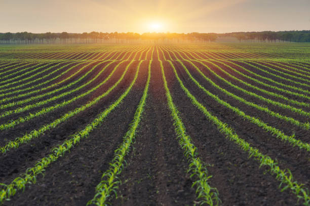
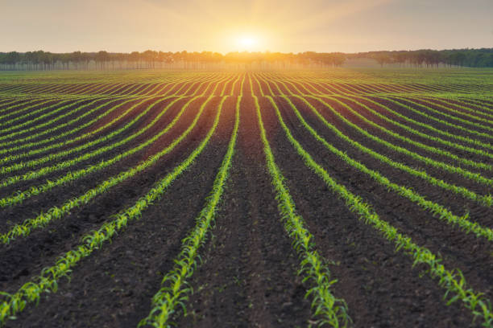

1. Organic Farming
Organic farming is an agricultural approach that avoids synthetic chemicals and genetically modified organisms. Instead, it uses natural fertilizers, compost, and crop rotations to enrich soil and control pests. This method promotes biodiversity, enhances soil fertility, and produces food free from synthetic pesticides, making it a sustainable option for both the environment and human health.
 

2. Hydroponics
Hydroponics is a soilless farming technique that involves growing plants in nutrient-rich water solutions. This method allows for faster growth rates and requires significantly less water than traditional farming. Ideal for urban areas and regions with limited arable land, hydroponics enables year-round crop production with precise control over nutrients and growing conditions.


3. Vertical Farming
Vertical farming involves stacking layers of crops in controlled indoor environments, maximizing space efficiency. Using LED lights and controlled climates, this method allows for consistent, pesticide-free production in urban areas where space is limited. Vertical farming minimizes the need for water and pesticides, reduces transportation emissions, and ensures a fresh supply of produce near urban centers.